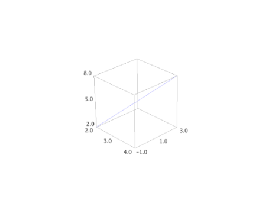
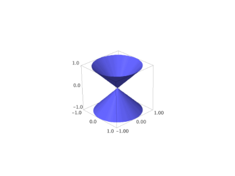

Parametric plots¶
- sage.plot.plot3d.parametric_plot3d.parametric_plot3d(f, urange, vrange=None, plot_points='automatic', boundary_style=None, **kwds)[source]¶
Return a parametric three-dimensional space curve or surface.
There are four ways to call this function:
parametric_plot3d([f_x, f_y, f_z], (u_min, u_max)): \(f_x, f_y, f_z\) are three functions and \(u_{\min}\) and \(u_{\max}\) are real numbersparametric_plot3d([f_x, f_y, f_z], (u, u_min, u_max)): \(f_x, f_y, f_z\) can be viewed as functions of \(u\)parametric_plot3d([f_x, f_y, f_z], (u_min, u_max), (v_min, v_max)): \(f_x, f_y, f_z\) are each functions of two variablesparametric_plot3d([f_x, f_y, f_z], (u, u_min, u_max), (v, v_min, v_max)): \(f_x, f_y, f_z\) can be viewed as functions of \(u\) and \(v\)
INPUT:
f– a 3-tuple of functions or expressions, or vector of size 3urange– a 2-tuple (u_min, u_max) or a 3-tuple (u, u_min, u_max)vrange– (optional, only used for surfaces) a 2-tuple (v_min, v_max) or a 3-tuple (v, v_min, v_max)plot_points– (default: “automatic”, which is 75 for curves and [40,40] for surfaces) initial number of sample points in each parameter; an integer for a curve, and a pair of integers for a surface.boundary_style– (default: None, no boundary) a dict that describes how to draw the boundaries of regions by giving options that are passed to the line3d command.mesh– boolean (default:False); whether to display mesh grid linesdots– boolean (default:False); whether to display dots at mesh grid points
Note
By default for a curve any points where \(f_x\), \(f_y\), or \(f_z\) do not evaluate to a real number are skipped.
Currently for a surface \(f_x\), \(f_y\), and \(f_z\) have to be defined everywhere. This will change.
mesh and dots are not supported when using the Tachyon ray tracer renderer.
EXAMPLES: We demonstrate each of the four ways to call this function.
A space curve defined by three functions of 1 variable:
sage: parametric_plot3d((sin, cos, lambda u: u/10), (0,20)) Graphics3d Object
>>> from sage.all import * >>> parametric_plot3d((sin, cos, lambda u: u/Integer(10)), (Integer(0),Integer(20))) Graphics3d Object
Note above the lambda function, which creates a callable Python function that sends \(u\) to \(u/10\).
Next we draw the same plot as above, but using symbolic functions:
sage: u = var('u') sage: parametric_plot3d((sin(u), cos(u), u/10), (u,0,20)) Graphics3d Object
>>> from sage.all import * >>> u = var('u') >>> parametric_plot3d((sin(u), cos(u), u/Integer(10)), (u,Integer(0),Integer(20))) Graphics3d Object
We draw a parametric surface using 3 Python functions (defined using lambda):
sage: f = (lambda u,v: cos(u), lambda u,v: sin(u)+cos(v), lambda u,v: sin(v)) sage: parametric_plot3d(f, (0,2*pi), (-pi,pi)) Graphics3d Object
>>> from sage.all import * >>> f = (lambda u,v: cos(u), lambda u,v: sin(u)+cos(v), lambda u,v: sin(v)) >>> parametric_plot3d(f, (Integer(0),Integer(2)*pi), (-pi,pi)) Graphics3d Object
The same surface, but where the defining functions are symbolic:
sage: u, v = var('u,v') sage: parametric_plot3d((cos(u), sin(u)+cos(v), sin(v)), (u,0,2*pi), (v,-pi,pi)) Graphics3d Object
>>> from sage.all import * >>> u, v = var('u,v') >>> parametric_plot3d((cos(u), sin(u)+cos(v), sin(v)), (u,Integer(0),Integer(2)*pi), (v,-pi,pi)) Graphics3d Object
The surface, but with a mesh:
sage: u, v = var('u,v') sage: parametric_plot3d((cos(u), sin(u)+cos(v), sin(v)), (u,0,2*pi), (v,-pi,pi), mesh=True) Graphics3d Object
>>> from sage.all import * >>> u, v = var('u,v') >>> parametric_plot3d((cos(u), sin(u)+cos(v), sin(v)), (u,Integer(0),Integer(2)*pi), (v,-pi,pi), mesh=True) Graphics3d Object
We increase the number of plot points, and make the surface green and transparent:
sage: parametric_plot3d((cos(u), sin(u)+cos(v), sin(v)), (u,0,2*pi), (v,-pi,pi), ....: color='green', opacity=0.1, plot_points=[30,30]) Graphics3d Object
>>> from sage.all import * >>> parametric_plot3d((cos(u), sin(u)+cos(v), sin(v)), (u,Integer(0),Integer(2)*pi), (v,-pi,pi), ... color='green', opacity=RealNumber('0.1'), plot_points=[Integer(30),Integer(30)]) Graphics3d Object
One can also color the surface using a coloring function and a colormap as follows. Note that the coloring function must take values in the interval [0,1].
sage: u,v = var('u,v') sage: def cf(u, v): return sin(u+v/2)**2 sage: P = parametric_plot3d((cos(u), sin(u)+cos(v), sin(v)), ....: (u,0,2*pi), (v,-pi,pi), color=(cf,colormaps.PiYG), plot_points=[60,60]) sage: P.show(viewer='tachyon')
>>> from sage.all import * >>> u,v = var('u,v') >>> def cf(u, v): return sin(u+v/Integer(2))**Integer(2) >>> P = parametric_plot3d((cos(u), sin(u)+cos(v), sin(v)), ... (u,Integer(0),Integer(2)*pi), (v,-pi,pi), color=(cf,colormaps.PiYG), plot_points=[Integer(60),Integer(60)]) >>> P.show(viewer='tachyon')
Another example, a colored Möbius band:
sage: cm = colormaps.ocean sage: def c(x, y): return sin(x*y)**2 sage: from sage.plot.plot3d.parametric_surface import MoebiusStrip sage: MoebiusStrip(5, 1, plot_points=200, color=(c,cm)) Graphics3d Object
>>> from sage.all import * >>> cm = colormaps.ocean >>> def c(x, y): return sin(x*y)**Integer(2) >>> from sage.plot.plot3d.parametric_surface import MoebiusStrip >>> MoebiusStrip(Integer(5), Integer(1), plot_points=Integer(200), color=(c,cm)) Graphics3d Object
Yet another colored example:
sage: from sage.plot.plot3d.parametric_surface import ParametricSurface sage: cm = colormaps.autumn sage: def c(x, y): return sin(x*y)**2 sage: def g(x, y): return x, y+sin(y), x**2 + y**2 sage: ParametricSurface(g, (srange(-10,10,0.1), srange(-5,5.0,0.1)), color=(c,cm)) Graphics3d Object
>>> from sage.all import * >>> from sage.plot.plot3d.parametric_surface import ParametricSurface >>> cm = colormaps.autumn >>> def c(x, y): return sin(x*y)**Integer(2) >>> def g(x, y): return x, y+sin(y), x**Integer(2) + y**Integer(2) >>> ParametricSurface(g, (srange(-Integer(10),Integer(10),RealNumber('0.1')), srange(-Integer(5),RealNumber('5.0'),RealNumber('0.1'))), color=(c,cm)) Graphics3d Object
We call the space curve function but with polynomials instead of symbolic variables.
sage: R.<t> = RDF[] sage: parametric_plot3d((t, t^2, t^3), (t,0,3)) Graphics3d Object
>>> from sage.all import * >>> R = RDF['t']; (t,) = R._first_ngens(1) >>> parametric_plot3d((t, t**Integer(2), t**Integer(3)), (t,Integer(0),Integer(3))) Graphics3d Object
Next we plot the same curve, but because we use (0, 3) instead of (t, 0, 3), each polynomial is viewed as a callable function of one variable:
sage: parametric_plot3d((t, t^2, t^3), (0,3)) Graphics3d Object
>>> from sage.all import * >>> parametric_plot3d((t, t**Integer(2), t**Integer(3)), (Integer(0),Integer(3))) Graphics3d Object

We do a plot but mix a symbolic input, and an integer:
sage: t = var('t') sage: parametric_plot3d((1, sin(t), cos(t)), (t,0,3)) Graphics3d Object
>>> from sage.all import * >>> t = var('t') >>> parametric_plot3d((Integer(1), sin(t), cos(t)), (t,Integer(0),Integer(3))) Graphics3d Object
We specify a boundary style to show us the values of the function at its extrema:
sage: u, v = var('u,v') sage: parametric_plot3d((cos(u), sin(u)+cos(v), sin(v)), (u,0,pi), (v,0,pi), ....: boundary_style={"color": "black", "thickness": 2}) Graphics3d Object
>>> from sage.all import * >>> u, v = var('u,v') >>> parametric_plot3d((cos(u), sin(u)+cos(v), sin(v)), (u,Integer(0),pi), (v,Integer(0),pi), ... boundary_style={"color": "black", "thickness": Integer(2)}) Graphics3d Object
We can plot vectors:
sage: x,y = var('x,y') sage: parametric_plot3d(vector([x-y, x*y, x*cos(y)]), (x,0,2), (y,0,2)) Graphics3d Object
>>> from sage.all import * >>> x,y = var('x,y') >>> parametric_plot3d(vector([x-y, x*y, x*cos(y)]), (x,Integer(0),Integer(2)), (y,Integer(0),Integer(2))) Graphics3d Object
sage: t = var('t') sage: p = vector([1,2,3]) sage: q = vector([2,-1,2]) sage: parametric_plot3d(p*t+q, (t,0,2)) Graphics3d Object
>>> from sage.all import * >>> t = var('t') >>> p = vector([Integer(1),Integer(2),Integer(3)]) >>> q = vector([Integer(2),-Integer(1),Integer(2)]) >>> parametric_plot3d(p*t+q, (t,Integer(0),Integer(2))) Graphics3d Object
 Any options you would normally use to specify the appearance of a curve are valid as entries in the
boundary_styledict.MANY MORE EXAMPLES:
We plot two interlinked tori:
sage: u, v = var('u,v') sage: f1 = (4+(3+cos(v))*sin(u), 4+(3+cos(v))*cos(u), 4+sin(v)) sage: f2 = (8+(3+cos(v))*cos(u), 3+sin(v), 4+(3+cos(v))*sin(u)) sage: p1 = parametric_plot3d(f1, (u,0,2*pi), (v,0,2*pi), texture='red') sage: p2 = parametric_plot3d(f2, (u,0,2*pi), (v,0,2*pi), texture='blue') sage: p1 + p2 Graphics3d Object
>>> from sage.all import * >>> u, v = var('u,v') >>> f1 = (Integer(4)+(Integer(3)+cos(v))*sin(u), Integer(4)+(Integer(3)+cos(v))*cos(u), Integer(4)+sin(v)) >>> f2 = (Integer(8)+(Integer(3)+cos(v))*cos(u), Integer(3)+sin(v), Integer(4)+(Integer(3)+cos(v))*sin(u)) >>> p1 = parametric_plot3d(f1, (u,Integer(0),Integer(2)*pi), (v,Integer(0),Integer(2)*pi), texture='red') >>> p2 = parametric_plot3d(f2, (u,Integer(0),Integer(2)*pi), (v,Integer(0),Integer(2)*pi), texture='blue') >>> p1 + p2 Graphics3d Object

A cylindrical Star of David:
sage: u,v = var('u v') sage: K = (abs(cos(u))^200+abs(sin(u))^200)^(-1.0/200) sage: f_x = cos(u) * cos(v) * (abs(cos(3*v/4))^500+abs(sin(3*v/4))^500)^(-1/260) * K sage: f_y = cos(u) * sin(v) * (abs(cos(3*v/4))^500+abs(sin(3*v/4))^500)^(-1/260) * K sage: f_z = sin(u) * K sage: parametric_plot3d([f_x, f_y, f_z], (u, -pi, pi), (v, 0, 2*pi)) Graphics3d Object
>>> from sage.all import * >>> u,v = var('u v') >>> K = (abs(cos(u))**Integer(200)+abs(sin(u))**Integer(200))**(-RealNumber('1.0')/Integer(200)) >>> f_x = cos(u) * cos(v) * (abs(cos(Integer(3)*v/Integer(4)))**Integer(500)+abs(sin(Integer(3)*v/Integer(4)))**Integer(500))**(-Integer(1)/Integer(260)) * K >>> f_y = cos(u) * sin(v) * (abs(cos(Integer(3)*v/Integer(4)))**Integer(500)+abs(sin(Integer(3)*v/Integer(4)))**Integer(500))**(-Integer(1)/Integer(260)) * K >>> f_z = sin(u) * K >>> parametric_plot3d([f_x, f_y, f_z], (u, -pi, pi), (v, Integer(0), Integer(2)*pi)) Graphics3d Object
Double heart:
sage: u, v = var('u,v') sage: G1 = abs(sqrt(2)*tanh((u/sqrt(2)))) sage: G2 = abs(sqrt(2)*tanh((v/sqrt(2)))) sage: f_x = (abs(v) - abs(u) - G1 + G2)*sin(v) sage: f_y = (abs(v) - abs(u) - G1 - G2)*cos(v) sage: f_z = sin(u)*(abs(cos(u)) + abs(sin(u)))^(-1) sage: parametric_plot3d([f_x, f_y, f_z], (u,0,pi), (v,-pi,pi)) Graphics3d Object
>>> from sage.all import * >>> u, v = var('u,v') >>> G1 = abs(sqrt(Integer(2))*tanh((u/sqrt(Integer(2))))) >>> G2 = abs(sqrt(Integer(2))*tanh((v/sqrt(Integer(2))))) >>> f_x = (abs(v) - abs(u) - G1 + G2)*sin(v) >>> f_y = (abs(v) - abs(u) - G1 - G2)*cos(v) >>> f_z = sin(u)*(abs(cos(u)) + abs(sin(u)))**(-Integer(1)) >>> parametric_plot3d([f_x, f_y, f_z], (u,Integer(0),pi), (v,-pi,pi)) Graphics3d Object
Heart:
sage: u, v = var('u,v') sage: f_x = cos(u)*(4*sqrt(1-v^2)*sin(abs(u))^abs(u)) sage: f_y = sin(u)*(4*sqrt(1-v^2)*sin(abs(u))^abs(u)) sage: f_z = v sage: parametric_plot3d([f_x, f_y, f_z], (u,-pi,pi), (v,-1,1), frame=False, color='red') Graphics3d Object
>>> from sage.all import * >>> u, v = var('u,v') >>> f_x = cos(u)*(Integer(4)*sqrt(Integer(1)-v**Integer(2))*sin(abs(u))**abs(u)) >>> f_y = sin(u)*(Integer(4)*sqrt(Integer(1)-v**Integer(2))*sin(abs(u))**abs(u)) >>> f_z = v >>> parametric_plot3d([f_x, f_y, f_z], (u,-pi,pi), (v,-Integer(1),Integer(1)), frame=False, color='red') Graphics3d Object
A Trefoil knot (Wikipedia article Trefoil_knot):
sage: u, v = var('u,v') sage: f_x = (4*(1+0.25*sin(3*v))+cos(u))*cos(2*v) sage: f_y = (4*(1+0.25*sin(3*v))+cos(u))*sin(2*v) sage: f_z = sin(u)+2*cos(3*v) sage: parametric_plot3d([f_x, f_y, f_z], (u,-pi,pi), (v,-pi,pi), frame=False, color='blue') Graphics3d Object
>>> from sage.all import * >>> u, v = var('u,v') >>> f_x = (Integer(4)*(Integer(1)+RealNumber('0.25')*sin(Integer(3)*v))+cos(u))*cos(Integer(2)*v) >>> f_y = (Integer(4)*(Integer(1)+RealNumber('0.25')*sin(Integer(3)*v))+cos(u))*sin(Integer(2)*v) >>> f_z = sin(u)+Integer(2)*cos(Integer(3)*v) >>> parametric_plot3d([f_x, f_y, f_z], (u,-pi,pi), (v,-pi,pi), frame=False, color='blue') Graphics3d Object

Green bowtie:
sage: u, v = var('u,v') sage: f_x = sin(u) / (sqrt(2) + sin(v)) sage: f_y = sin(u) / (sqrt(2) + cos(v)) sage: f_z = cos(u) / (1 + sqrt(2)) sage: parametric_plot3d([f_x, f_y, f_z], (u,-pi,pi), (v,-pi,pi), frame=False, color='green') Graphics3d Object
>>> from sage.all import * >>> u, v = var('u,v') >>> f_x = sin(u) / (sqrt(Integer(2)) + sin(v)) >>> f_y = sin(u) / (sqrt(Integer(2)) + cos(v)) >>> f_z = cos(u) / (Integer(1) + sqrt(Integer(2))) >>> parametric_plot3d([f_x, f_y, f_z], (u,-pi,pi), (v,-pi,pi), frame=False, color='green') Graphics3d Object
Boy’s surface (Wikipedia article Boy%27s_surface and https://mathcurve.com/surfaces/boy/boy.shtml):
sage: u, v = var('u,v') sage: K = cos(u) / (sqrt(2) - cos(2*u)*sin(3*v)) sage: f_x = K * (cos(u)*cos(2*v)+sqrt(2)*sin(u)*cos(v)) sage: f_y = K * (cos(u)*sin(2*v)-sqrt(2)*sin(u)*sin(v)) sage: f_z = 3 * K * cos(u) sage: parametric_plot3d([f_x, f_y, f_z], # long time ....: (u,-2*pi,2*pi), ....: (v,0,pi), ....: plot_points=[90,90], ....: frame=False, ....: color='orange') Graphics3d Object
>>> from sage.all import * >>> u, v = var('u,v') >>> K = cos(u) / (sqrt(Integer(2)) - cos(Integer(2)*u)*sin(Integer(3)*v)) >>> f_x = K * (cos(u)*cos(Integer(2)*v)+sqrt(Integer(2))*sin(u)*cos(v)) >>> f_y = K * (cos(u)*sin(Integer(2)*v)-sqrt(Integer(2))*sin(u)*sin(v)) >>> f_z = Integer(3) * K * cos(u) >>> parametric_plot3d([f_x, f_y, f_z], # long time ... (u,-Integer(2)*pi,Integer(2)*pi), ... (v,Integer(0),pi), ... plot_points=[Integer(90),Integer(90)], ... frame=False, ... color='orange') Graphics3d Object
Maeder’s Owl also known as Bour’s minimal surface (Wikipedia article Bour%27s_minimal_surface):
sage: u, v = var('u,v') sage: f_x = v*cos(u) - 0.5*v^2*cos(2*u) sage: f_y = -v*sin(u) - 0.5*v^2*sin(2*u) sage: f_z = 4 * v^1.5 * cos(3*u/2) / 3 sage: parametric_plot3d([f_x, f_y, f_z], (u,-2*pi,2*pi), (v,0,1), ....: plot_points=[90,90], frame=False, color='purple') Graphics3d Object
>>> from sage.all import * >>> u, v = var('u,v') >>> f_x = v*cos(u) - RealNumber('0.5')*v**Integer(2)*cos(Integer(2)*u) >>> f_y = -v*sin(u) - RealNumber('0.5')*v**Integer(2)*sin(Integer(2)*u) >>> f_z = Integer(4) * v**RealNumber('1.5') * cos(Integer(3)*u/Integer(2)) / Integer(3) >>> parametric_plot3d([f_x, f_y, f_z], (u,-Integer(2)*pi,Integer(2)*pi), (v,Integer(0),Integer(1)), ... plot_points=[Integer(90),Integer(90)], frame=False, color='purple') Graphics3d Object
Bracelet:
sage: u, v = var('u,v') sage: f_x = (2 + 0.2*sin(2*pi*u))*sin(pi*v) sage: f_y = 0.2 * cos(2*pi*u) * 3 * cos(2*pi*v) sage: f_z = (2 + 0.2*sin(2*pi*u))*cos(pi*v) sage: parametric_plot3d([f_x, f_y, f_z], (u,0,pi/2), (v,0,3*pi/4), frame=False, color='gray') Graphics3d Object
>>> from sage.all import * >>> u, v = var('u,v') >>> f_x = (Integer(2) + RealNumber('0.2')*sin(Integer(2)*pi*u))*sin(pi*v) >>> f_y = RealNumber('0.2') * cos(Integer(2)*pi*u) * Integer(3) * cos(Integer(2)*pi*v) >>> f_z = (Integer(2) + RealNumber('0.2')*sin(Integer(2)*pi*u))*cos(pi*v) >>> parametric_plot3d([f_x, f_y, f_z], (u,Integer(0),pi/Integer(2)), (v,Integer(0),Integer(3)*pi/Integer(4)), frame=False, color='gray') Graphics3d Object
Green goblet:
sage: u, v = var('u,v') sage: f_x = cos(u) * cos(2*v) sage: f_y = sin(u) * cos(2*v) sage: f_z = sin(v) sage: parametric_plot3d([f_x, f_y, f_z], (u,0,2*pi), (v,0,pi), frame=False, color='green') Graphics3d Object
>>> from sage.all import * >>> u, v = var('u,v') >>> f_x = cos(u) * cos(Integer(2)*v) >>> f_y = sin(u) * cos(Integer(2)*v) >>> f_z = sin(v) >>> parametric_plot3d([f_x, f_y, f_z], (u,Integer(0),Integer(2)*pi), (v,Integer(0),pi), frame=False, color='green') Graphics3d Object
Funny folded surface - with square projection:
sage: u, v = var('u,v') sage: f_x = cos(u) * sin(2*v) sage: f_y = sin(u) * cos(2*v) sage: f_z = sin(v) sage: parametric_plot3d([f_x, f_y, f_z], (u,0,2*pi), (v,0,2*pi), frame=False, color='green') Graphics3d Object
>>> from sage.all import * >>> u, v = var('u,v') >>> f_x = cos(u) * sin(Integer(2)*v) >>> f_y = sin(u) * cos(Integer(2)*v) >>> f_z = sin(v) >>> parametric_plot3d([f_x, f_y, f_z], (u,Integer(0),Integer(2)*pi), (v,Integer(0),Integer(2)*pi), frame=False, color='green') Graphics3d Object
Surface of revolution of figure 8:
sage: u, v = var('u,v') sage: f_x = cos(u) * sin(2*v) sage: f_y = sin(u) * sin(2*v) sage: f_z = sin(v) sage: parametric_plot3d([f_x, f_y, f_z], (u,0,2*pi), (v,0,2*pi), frame=False, color='green') Graphics3d Object
>>> from sage.all import * >>> u, v = var('u,v') >>> f_x = cos(u) * sin(Integer(2)*v) >>> f_y = sin(u) * sin(Integer(2)*v) >>> f_z = sin(v) >>> parametric_plot3d([f_x, f_y, f_z], (u,Integer(0),Integer(2)*pi), (v,Integer(0),Integer(2)*pi), frame=False, color='green') Graphics3d Object
Yellow Whitney’s umbrella (Wikipedia article Whitney_umbrella):
sage: u, v = var('u,v') sage: f_x = u*v sage: f_y = u sage: f_z = v^2 sage: parametric_plot3d([f_x, f_y, f_z], (u,-1,1), (v,-1,1), frame=False, color='yellow') Graphics3d Object
>>> from sage.all import * >>> u, v = var('u,v') >>> f_x = u*v >>> f_y = u >>> f_z = v**Integer(2) >>> parametric_plot3d([f_x, f_y, f_z], (u,-Integer(1),Integer(1)), (v,-Integer(1),Integer(1)), frame=False, color='yellow') Graphics3d Object
Cross cap (Wikipedia article Cross-cap):
sage: u, v = var('u,v') sage: f_x = (1+cos(v)) * cos(u) sage: f_y = (1+cos(v)) * sin(u) sage: f_z = -tanh((2/3)*(u-pi)) * sin(v) sage: parametric_plot3d([f_x, f_y, f_z], (u,0,2*pi), (v,0,2*pi), frame=False, color='red') Graphics3d Object
>>> from sage.all import * >>> u, v = var('u,v') >>> f_x = (Integer(1)+cos(v)) * cos(u) >>> f_y = (Integer(1)+cos(v)) * sin(u) >>> f_z = -tanh((Integer(2)/Integer(3))*(u-pi)) * sin(v) >>> parametric_plot3d([f_x, f_y, f_z], (u,Integer(0),Integer(2)*pi), (v,Integer(0),Integer(2)*pi), frame=False, color='red') Graphics3d Object
Twisted torus:
sage: u, v = var('u,v') sage: f_x = (3+sin(v)+cos(u)) * cos(2*v) sage: f_y = (3+sin(v)+cos(u)) * sin(2*v) sage: f_z = sin(u) + 2*cos(v) sage: parametric_plot3d([f_x, f_y, f_z], (u,0,2*pi), (v,0,2*pi), frame=False, color='red') Graphics3d Object
>>> from sage.all import * >>> u, v = var('u,v') >>> f_x = (Integer(3)+sin(v)+cos(u)) * cos(Integer(2)*v) >>> f_y = (Integer(3)+sin(v)+cos(u)) * sin(Integer(2)*v) >>> f_z = sin(u) + Integer(2)*cos(v) >>> parametric_plot3d([f_x, f_y, f_z], (u,Integer(0),Integer(2)*pi), (v,Integer(0),Integer(2)*pi), frame=False, color='red') Graphics3d Object
Four intersecting discs:
sage: u, v = var('u,v') sage: f_x = v*cos(u) - 0.5*v^2*cos(2*u) sage: f_y = -v*sin(u) - 0.5*v^2*sin(2*u) sage: f_z = 4 * v^1.5 * cos(3*u/2) / 3 sage: parametric_plot3d([f_x, f_y, f_z], (u,0,4*pi), (v,0,2*pi), frame=False, color='red', opacity=0.7) Graphics3d Object
>>> from sage.all import * >>> u, v = var('u,v') >>> f_x = v*cos(u) - RealNumber('0.5')*v**Integer(2)*cos(Integer(2)*u) >>> f_y = -v*sin(u) - RealNumber('0.5')*v**Integer(2)*sin(Integer(2)*u) >>> f_z = Integer(4) * v**RealNumber('1.5') * cos(Integer(3)*u/Integer(2)) / Integer(3) >>> parametric_plot3d([f_x, f_y, f_z], (u,Integer(0),Integer(4)*pi), (v,Integer(0),Integer(2)*pi), frame=False, color='red', opacity=RealNumber('0.7')) Graphics3d Object
Steiner surface/Roman’s surface (see Wikipedia article Roman_surface and Wikipedia article Steiner_surface):
sage: u, v = var('u,v') sage: f_x = (sin(2*u) * cos(v) * cos(v)) sage: f_y = (sin(u) * sin(2*v)) sage: f_z = (cos(u) * sin(2*v)) sage: parametric_plot3d([f_x, f_y, f_z], (u,-pi/2,pi/2), (v,-pi/2,pi/2), frame=False, color='red') Graphics3d Object
>>> from sage.all import * >>> u, v = var('u,v') >>> f_x = (sin(Integer(2)*u) * cos(v) * cos(v)) >>> f_y = (sin(u) * sin(Integer(2)*v)) >>> f_z = (cos(u) * sin(Integer(2)*v)) >>> parametric_plot3d([f_x, f_y, f_z], (u,-pi/Integer(2),pi/Integer(2)), (v,-pi/Integer(2),pi/Integer(2)), frame=False, color='red') Graphics3d Object
Klein bottle? (see Wikipedia article Klein_bottle):
sage: u, v = var('u,v') sage: f_x = (3*(1+sin(v)) + 2*(1-cos(v)/2)*cos(u)) * cos(v) sage: f_y = (4+2*(1-cos(v)/2)*cos(u)) * sin(v) sage: f_z = -2 * (1-cos(v)/2) * sin(u) sage: parametric_plot3d([f_x, f_y, f_z], (u,0,2*pi), (v,0,2*pi), frame=False, color='green') Graphics3d Object
>>> from sage.all import * >>> u, v = var('u,v') >>> f_x = (Integer(3)*(Integer(1)+sin(v)) + Integer(2)*(Integer(1)-cos(v)/Integer(2))*cos(u)) * cos(v) >>> f_y = (Integer(4)+Integer(2)*(Integer(1)-cos(v)/Integer(2))*cos(u)) * sin(v) >>> f_z = -Integer(2) * (Integer(1)-cos(v)/Integer(2)) * sin(u) >>> parametric_plot3d([f_x, f_y, f_z], (u,Integer(0),Integer(2)*pi), (v,Integer(0),Integer(2)*pi), frame=False, color='green') Graphics3d Object
A Figure 8 embedding of the Klein bottle (see Wikipedia article Klein_bottle):
sage: u, v = var('u,v') sage: f_x = (2+cos(v/2)*sin(u)-sin(v/2)*sin(2*u)) * cos(v) sage: f_y = (2+cos(v/2)*sin(u)-sin(v/2)*sin(2*u)) * sin(v) sage: f_z = sin(v/2)*sin(u) + cos(v/2)*sin(2*u) sage: parametric_plot3d([f_x, f_y, f_z], (u,0,2*pi), (v,0,2*pi), frame=False, color='red') Graphics3d Object
>>> from sage.all import * >>> u, v = var('u,v') >>> f_x = (Integer(2)+cos(v/Integer(2))*sin(u)-sin(v/Integer(2))*sin(Integer(2)*u)) * cos(v) >>> f_y = (Integer(2)+cos(v/Integer(2))*sin(u)-sin(v/Integer(2))*sin(Integer(2)*u)) * sin(v) >>> f_z = sin(v/Integer(2))*sin(u) + cos(v/Integer(2))*sin(Integer(2)*u) >>> parametric_plot3d([f_x, f_y, f_z], (u,Integer(0),Integer(2)*pi), (v,Integer(0),Integer(2)*pi), frame=False, color='red') Graphics3d Object
Enneper’s surface (see Wikipedia article Enneper_surface):
sage: u, v = var('u,v') sage: f_x = u - u^3/3 + u*v^2 sage: f_y = v - v^3/3 + v*u^2 sage: f_z = u^2 - v^2 sage: parametric_plot3d([f_x, f_y, f_z], (u,-2,2), (v,-2,2), frame=False, color='red') Graphics3d Object
>>> from sage.all import * >>> u, v = var('u,v') >>> f_x = u - u**Integer(3)/Integer(3) + u*v**Integer(2) >>> f_y = v - v**Integer(3)/Integer(3) + v*u**Integer(2) >>> f_z = u**Integer(2) - v**Integer(2) >>> parametric_plot3d([f_x, f_y, f_z], (u,-Integer(2),Integer(2)), (v,-Integer(2),Integer(2)), frame=False, color='red') Graphics3d Object
Henneberg’s surface (see http://xahlee.org/surface/gallery_m.html):
sage: u, v = var('u,v') sage: f_x = 2*sinh(u)*cos(v) - (2/3)*sinh(3*u)*cos(3*v) sage: f_y = 2*sinh(u)*sin(v) + (2/3)*sinh(3*u)*sin(3*v) sage: f_z = 2 * cosh(2*u) * cos(2*v) sage: parametric_plot3d([f_x, f_y, f_z], (u,-1,1), (v,-pi/2,pi/2), frame=False, color='red') Graphics3d Object
>>> from sage.all import * >>> u, v = var('u,v') >>> f_x = Integer(2)*sinh(u)*cos(v) - (Integer(2)/Integer(3))*sinh(Integer(3)*u)*cos(Integer(3)*v) >>> f_y = Integer(2)*sinh(u)*sin(v) + (Integer(2)/Integer(3))*sinh(Integer(3)*u)*sin(Integer(3)*v) >>> f_z = Integer(2) * cosh(Integer(2)*u) * cos(Integer(2)*v) >>> parametric_plot3d([f_x, f_y, f_z], (u,-Integer(1),Integer(1)), (v,-pi/Integer(2),pi/Integer(2)), frame=False, color='red') Graphics3d Object
Dini’s spiral:
sage: u, v = var('u,v') sage: f_x = cos(u) * sin(v) sage: f_y = sin(u) * sin(v) sage: f_z = (cos(v)+log(tan(v/2))) + 0.2*u sage: parametric_plot3d([f_x, f_y, f_z], (u,0,12.4), (v,0.1,2), frame=False, color='red') Graphics3d Object
>>> from sage.all import * >>> u, v = var('u,v') >>> f_x = cos(u) * sin(v) >>> f_y = sin(u) * sin(v) >>> f_z = (cos(v)+log(tan(v/Integer(2)))) + RealNumber('0.2')*u >>> parametric_plot3d([f_x, f_y, f_z], (u,Integer(0),RealNumber('12.4')), (v,RealNumber('0.1'),Integer(2)), frame=False, color='red') Graphics3d Object
Catalan’s surface (see http://xahlee.org/surface/catalan/catalan.html):
sage: u, v = var('u,v') sage: f_x = u - sin(u)*cosh(v) sage: f_y = 1 - cos(u)*cosh(v) sage: f_z = 4 * sin(1/2*u) * sinh(v/2) sage: parametric_plot3d([f_x, f_y, f_z], (u,-pi,3*pi), (v,-2,2), frame=False, color='red') Graphics3d Object
>>> from sage.all import * >>> u, v = var('u,v') >>> f_x = u - sin(u)*cosh(v) >>> f_y = Integer(1) - cos(u)*cosh(v) >>> f_z = Integer(4) * sin(Integer(1)/Integer(2)*u) * sinh(v/Integer(2)) >>> parametric_plot3d([f_x, f_y, f_z], (u,-pi,Integer(3)*pi), (v,-Integer(2),Integer(2)), frame=False, color='red') Graphics3d Object
A Conchoid:
sage: u, v = var('u,v') sage: k = 1.2; k_2 = 1.2; a = 1.5 sage: f = (k^u*(1+cos(v))*cos(u), k^u*(1+cos(v))*sin(u), k^u*sin(v)-a*k_2^u) sage: parametric_plot3d(f, (u,0,6*pi), (v,0,2*pi), plot_points=[40,40], texture=(0,0.5,0)) Graphics3d Object
>>> from sage.all import * >>> u, v = var('u,v') >>> k = RealNumber('1.2'); k_2 = RealNumber('1.2'); a = RealNumber('1.5') >>> f = (k**u*(Integer(1)+cos(v))*cos(u), k**u*(Integer(1)+cos(v))*sin(u), k**u*sin(v)-a*k_2**u) >>> parametric_plot3d(f, (u,Integer(0),Integer(6)*pi), (v,Integer(0),Integer(2)*pi), plot_points=[Integer(40),Integer(40)], texture=(Integer(0),RealNumber('0.5'),Integer(0))) Graphics3d Object
A Möbius strip:
sage: u,v = var("u,v") sage: parametric_plot3d([cos(u)*(1+v*cos(u/2)), sin(u)*(1+v*cos(u/2)), 0.2*v*sin(u/2)], ....: (u,0, 4*pi+0.5), (v,0, 0.3), plot_points=[50,50]) Graphics3d Object
>>> from sage.all import * >>> u,v = var("u,v") >>> parametric_plot3d([cos(u)*(Integer(1)+v*cos(u/Integer(2))), sin(u)*(Integer(1)+v*cos(u/Integer(2))), RealNumber('0.2')*v*sin(u/Integer(2))], ... (u,Integer(0), Integer(4)*pi+RealNumber('0.5')), (v,Integer(0), RealNumber('0.3')), plot_points=[Integer(50),Integer(50)]) Graphics3d Object
A Twisted Ribbon:
sage: u, v = var('u,v') sage: parametric_plot3d([3*sin(u)*cos(v), 3*sin(u)*sin(v), cos(v)], ....: (u,0,2*pi), (v,0,pi), plot_points=[50,50]) Graphics3d Object
>>> from sage.all import * >>> u, v = var('u,v') >>> parametric_plot3d([Integer(3)*sin(u)*cos(v), Integer(3)*sin(u)*sin(v), cos(v)], ... (u,Integer(0),Integer(2)*pi), (v,Integer(0),pi), plot_points=[Integer(50),Integer(50)]) Graphics3d Object
An Ellipsoid:
sage: u, v = var('u,v') sage: parametric_plot3d([3*sin(u)*cos(v), 2*sin(u)*sin(v), cos(u)], ....: (u,0, 2*pi), (v, 0, 2*pi), plot_points=[50,50], aspect_ratio=[1,1,1]) Graphics3d Object
>>> from sage.all import * >>> u, v = var('u,v') >>> parametric_plot3d([Integer(3)*sin(u)*cos(v), Integer(2)*sin(u)*sin(v), cos(u)], ... (u,Integer(0), Integer(2)*pi), (v, Integer(0), Integer(2)*pi), plot_points=[Integer(50),Integer(50)], aspect_ratio=[Integer(1),Integer(1),Integer(1)]) Graphics3d Object
A Cone:
sage: u, v = var('u,v') sage: parametric_plot3d([u*cos(v), u*sin(v), u], (u,-1,1), (v,0,2*pi+0.5), plot_points=[50,50]) Graphics3d Object
>>> from sage.all import * >>> u, v = var('u,v') >>> parametric_plot3d([u*cos(v), u*sin(v), u], (u,-Integer(1),Integer(1)), (v,Integer(0),Integer(2)*pi+RealNumber('0.5')), plot_points=[Integer(50),Integer(50)]) Graphics3d Object
 A Paraboloid:
sage: u, v = var('u,v') sage: parametric_plot3d([u*cos(v), u*sin(v), u^2], (u,0,1), (v,0,2*pi+0.4), plot_points=[50,50]) Graphics3d Object
>>> from sage.all import * >>> u, v = var('u,v') >>> parametric_plot3d([u*cos(v), u*sin(v), u**Integer(2)], (u,Integer(0),Integer(1)), (v,Integer(0),Integer(2)*pi+RealNumber('0.4')), plot_points=[Integer(50),Integer(50)]) Graphics3d Object
A Hyperboloid:
sage: u, v = var('u,v') sage: plot3d(u^2-v^2, (u,-1,1), (v,-1,1), plot_points=[50,50]) Graphics3d Object
>>> from sage.all import * >>> u, v = var('u,v') >>> plot3d(u**Integer(2)-v**Integer(2), (u,-Integer(1),Integer(1)), (v,-Integer(1),Integer(1)), plot_points=[Integer(50),Integer(50)]) Graphics3d Object
A weird looking surface - like a Möbius band but also an O:
sage: u, v = var('u,v') sage: parametric_plot3d([sin(u)*cos(u)*log(u^2)*sin(v), (u^2)^(1/6)*(cos(u)^2)^(1/4)*cos(v), sin(v)], ....: (u,0.001,1), (v,-pi,pi+0.2), plot_points=[50,50]) Graphics3d Object
>>> from sage.all import * >>> u, v = var('u,v') >>> parametric_plot3d([sin(u)*cos(u)*log(u**Integer(2))*sin(v), (u**Integer(2))**(Integer(1)/Integer(6))*(cos(u)**Integer(2))**(Integer(1)/Integer(4))*cos(v), sin(v)], ... (u,RealNumber('0.001'),Integer(1)), (v,-pi,pi+RealNumber('0.2')), plot_points=[Integer(50),Integer(50)]) Graphics3d Object
A heart, but not a cardioid (for my wife):
sage: u, v = var('u,v') sage: p1 = parametric_plot3d([sin(u)*cos(u)*log(u^2)*v*(1-v)/2, ((u^6)^(1/20)*(cos(u)^2)^(1/4)-1/2)*v*(1-v), v^(0.5)], ....: (u,0.001,1), (v,0,1), plot_points=[70,70], color='red') sage: p2 = parametric_plot3d([-sin(u)*cos(u)*log(u^2)*v*(1-v)/2, ((u^6)^(1/20)*(cos(u)^2)^(1/4)-1/2)*v*(1-v), v^(0.5)], ....: (u, 0.001,1), (v,0,1), plot_points=[70,70], color='red') sage: show(p1+p2)
>>> from sage.all import * >>> u, v = var('u,v') >>> p1 = parametric_plot3d([sin(u)*cos(u)*log(u**Integer(2))*v*(Integer(1)-v)/Integer(2), ((u**Integer(6))**(Integer(1)/Integer(20))*(cos(u)**Integer(2))**(Integer(1)/Integer(4))-Integer(1)/Integer(2))*v*(Integer(1)-v), v**(RealNumber('0.5'))], ... (u,RealNumber('0.001'),Integer(1)), (v,Integer(0),Integer(1)), plot_points=[Integer(70),Integer(70)], color='red') >>> p2 = parametric_plot3d([-sin(u)*cos(u)*log(u**Integer(2))*v*(Integer(1)-v)/Integer(2), ((u**Integer(6))**(Integer(1)/Integer(20))*(cos(u)**Integer(2))**(Integer(1)/Integer(4))-Integer(1)/Integer(2))*v*(Integer(1)-v), v**(RealNumber('0.5'))], ... (u, RealNumber('0.001'),Integer(1)), (v,Integer(0),Integer(1)), plot_points=[Integer(70),Integer(70)], color='red') >>> show(p1+p2)
A Hyperhelicoidal:
sage: u = var("u") sage: v = var("v") sage: f_x = (sinh(v)*cos(3*u)) / (1+cosh(u)*cosh(v)) sage: f_y = (sinh(v)*sin(3*u)) / (1+cosh(u)*cosh(v)) sage: f_z = (cosh(v)*sinh(u)) / (1+cosh(u)*cosh(v)) sage: parametric_plot3d([f_x, f_y, f_z], (u,-pi,pi), (v,-pi,pi), plot_points=[50,50], frame=False, color='red') Graphics3d Object
>>> from sage.all import * >>> u = var("u") >>> v = var("v") >>> f_x = (sinh(v)*cos(Integer(3)*u)) / (Integer(1)+cosh(u)*cosh(v)) >>> f_y = (sinh(v)*sin(Integer(3)*u)) / (Integer(1)+cosh(u)*cosh(v)) >>> f_z = (cosh(v)*sinh(u)) / (Integer(1)+cosh(u)*cosh(v)) >>> parametric_plot3d([f_x, f_y, f_z], (u,-pi,pi), (v,-pi,pi), plot_points=[Integer(50),Integer(50)], frame=False, color='red') Graphics3d Object
A Helicoid (lines through a helix, Wikipedia article Helix):
sage: u, v = var('u,v') sage: f_x = sinh(v) * sin(u) sage: f_y = -sinh(v) * cos(u) sage: f_z = 3 * u sage: parametric_plot3d([f_x, f_y, f_z], (u,-pi,pi), (v,-pi,pi), plot_points=[50,50], frame=False, color='red') Graphics3d Object
>>> from sage.all import * >>> u, v = var('u,v') >>> f_x = sinh(v) * sin(u) >>> f_y = -sinh(v) * cos(u) >>> f_z = Integer(3) * u >>> parametric_plot3d([f_x, f_y, f_z], (u,-pi,pi), (v,-pi,pi), plot_points=[Integer(50),Integer(50)], frame=False, color='red') Graphics3d Object
Kuen’s surface (http://virtualmathmuseum.org/Surface/kuen/kuen.html):
sage: f_x = (2*(cos(u) + u*sin(u))*sin(v))/(1+ u^2*sin(v)^2) sage: f_y = (2*(sin(u) - u*cos(u))*sin(v))/(1+ u^2*sin(v)^2) sage: f_z = log(tan(1/2 *v)) + (2*cos(v))/(1+ u^2*sin(v)^2) sage: parametric_plot3d([f_x, f_y, f_z], (u,0,2*pi), (v,0.01,pi-0.01), plot_points=[50,50], frame=False, color='green') Graphics3d Object
>>> from sage.all import * >>> f_x = (Integer(2)*(cos(u) + u*sin(u))*sin(v))/(Integer(1)+ u**Integer(2)*sin(v)**Integer(2)) >>> f_y = (Integer(2)*(sin(u) - u*cos(u))*sin(v))/(Integer(1)+ u**Integer(2)*sin(v)**Integer(2)) >>> f_z = log(tan(Integer(1)/Integer(2) *v)) + (Integer(2)*cos(v))/(Integer(1)+ u**Integer(2)*sin(v)**Integer(2)) >>> parametric_plot3d([f_x, f_y, f_z], (u,Integer(0),Integer(2)*pi), (v,RealNumber('0.01'),pi-RealNumber('0.01')), plot_points=[Integer(50),Integer(50)], frame=False, color='green') Graphics3d Object
A 5-pointed star:
sage: G1 = (abs(cos(u/4))^0.5+abs(sin(u/4))^0.5)^(-1/0.3) sage: G2 = (abs(cos(5*v/4))^1.7+abs(sin(5*v/4))^1.7)^(-1/0.1) sage: f_x = cos(u) * cos(v) * G1 * G2 sage: f_y = cos(u) * sin(v) * G1 * G2 sage: f_z = sin(u) * G1 sage: parametric_plot3d([f_x, f_y, f_z], (u,-pi/2,pi/2), (v,0,2*pi), plot_points=[50,50], frame=False, color='green') Graphics3d Object
>>> from sage.all import * >>> G1 = (abs(cos(u/Integer(4)))**RealNumber('0.5')+abs(sin(u/Integer(4)))**RealNumber('0.5'))**(-Integer(1)/RealNumber('0.3')) >>> G2 = (abs(cos(Integer(5)*v/Integer(4)))**RealNumber('1.7')+abs(sin(Integer(5)*v/Integer(4)))**RealNumber('1.7'))**(-Integer(1)/RealNumber('0.1')) >>> f_x = cos(u) * cos(v) * G1 * G2 >>> f_y = cos(u) * sin(v) * G1 * G2 >>> f_z = sin(u) * G1 >>> parametric_plot3d([f_x, f_y, f_z], (u,-pi/Integer(2),pi/Integer(2)), (v,Integer(0),Integer(2)*pi), plot_points=[Integer(50),Integer(50)], frame=False, color='green') Graphics3d Object
A cool self-intersecting surface (Eppener surface?):
sage: f_x = u - u^3/3 + u*v^2 sage: f_y = v - v^3/3 + v*u^2 sage: f_z = u^2 - v^2 sage: parametric_plot3d([f_x, f_y, f_z], (u,-25,25), (v,-25,25), plot_points=[50,50], frame=False, color='green') Graphics3d Object
>>> from sage.all import * >>> f_x = u - u**Integer(3)/Integer(3) + u*v**Integer(2) >>> f_y = v - v**Integer(3)/Integer(3) + v*u**Integer(2) >>> f_z = u**Integer(2) - v**Integer(2) >>> parametric_plot3d([f_x, f_y, f_z], (u,-Integer(25),Integer(25)), (v,-Integer(25),Integer(25)), plot_points=[Integer(50),Integer(50)], frame=False, color='green') Graphics3d Object
The breather surface (Wikipedia article Breather_surface):
sage: K = sqrt(0.84) sage: G = (0.4*((K*cosh(0.4*u))^2 + (0.4*sin(K*v))^2)) sage: f_x = (2*K*cosh(0.4*u)*(-(K*cos(v)*cos(K*v)) - sin(v)*sin(K*v)))/G sage: f_y = (2*K*cosh(0.4*u)*(-(K*sin(v)*cos(K*v)) + cos(v)*sin(K*v)))/G sage: f_z = -u + (2*0.84*cosh(0.4*u)*sinh(0.4*u))/G sage: parametric_plot3d([f_x, f_y, f_z], (u,-13.2,13.2), (v,-37.4,37.4), plot_points=[90,90], frame=False, color='green') Graphics3d Object
>>> from sage.all import * >>> K = sqrt(RealNumber('0.84')) >>> G = (RealNumber('0.4')*((K*cosh(RealNumber('0.4')*u))**Integer(2) + (RealNumber('0.4')*sin(K*v))**Integer(2))) >>> f_x = (Integer(2)*K*cosh(RealNumber('0.4')*u)*(-(K*cos(v)*cos(K*v)) - sin(v)*sin(K*v)))/G >>> f_y = (Integer(2)*K*cosh(RealNumber('0.4')*u)*(-(K*sin(v)*cos(K*v)) + cos(v)*sin(K*v)))/G >>> f_z = -u + (Integer(2)*RealNumber('0.84')*cosh(RealNumber('0.4')*u)*sinh(RealNumber('0.4')*u))/G >>> parametric_plot3d([f_x, f_y, f_z], (u,-RealNumber('13.2'),RealNumber('13.2')), (v,-RealNumber('37.4'),RealNumber('37.4')), plot_points=[Integer(90),Integer(90)], frame=False, color='green') Graphics3d Object